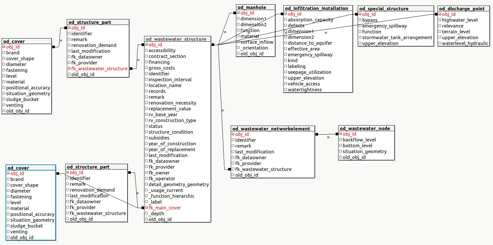
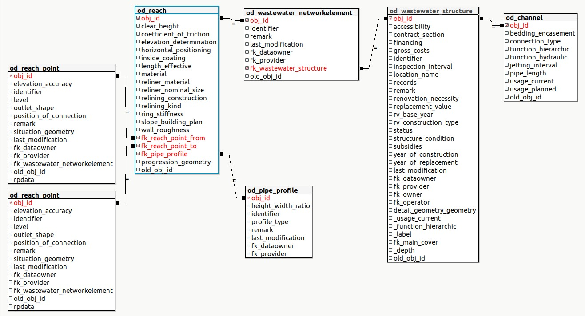
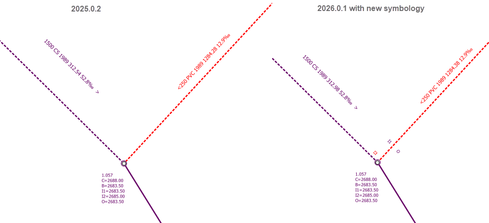

Explication des couches
Couches principales
TWW est construit autour de deux couches principales :
Les ouvrages d’assainissement
tww_app.vw_tww_wastewater_structureLes tronçons
tww_app.vw_tww_reach
Les ouvrages d’assainissement tww_app.vw_tww_wastewater_structure
Couche principale pour les ouvrages standards, installations spéciales, installations d’infiltration, exutoires (et stations d’épurations des eaux (STEP)). Créer une nouvelle entité dans cette couche crée toujours une nouvelle structure d’assainissement, un nouveau couvercle et un nouveau noeud réseau. Dans le formulaire d’édition, vous avez accès aux tables liées (ex. parties de structures, évènements de maintenance)

Même si un ouvrage est composé de plusieurs couvercles et nœuds réseaux, un seul point par ouvrage est représenté au sein de cette couche. Par défaut, la position du premier nœud réseau est utilisée comme coordonnées pour ce point.
Attention
Ne pas exporter les coordonnées de ces points comme couvercles. Utiliser la couche vw_cover pour cela.
Modifié dans la version 2025.0.
Un champ calculé tww_is_primary est disponible pour permettre à l’utilisateur de définir lui-même les ouvrages d’assainissement primaires. Il facilite la définition des requêtes, symbologies et étiquettes.
Les tronçons tww_app.vw_tww_reach
Couche principale pour les ouvrages linéaires d’assainissement (canalisations). Créer une nouvelle entité dans cette couche crée toujours un nouveau tronçon et une nouvelle canalisation. Dans le formulaire d’édition, vous avez accès aux tables liées (ex. parties de structures, évènements de maintenance, fichiers)

Ajouté dans la version 2025.0.
Un champ calculé tww_is_primary est disponible pour permettre à l’utilisateur de définir lui-même les ouvrages d’assainissement primaires. Il facilite la définition des requêtes, symbologies et étiquettes.
Créer flushing_nozzle sur les tronçons en tant que partie d’ouvrage du channel.
Groupe de couches Wastewater Structures
Détails d’ouvrages d’assainissement tww_od.wastewater_structure
Cette couche permet de visualiser et d’éditer les détails de géométrie des ouvrages d’assainissement. Il est possible de digitaliser une nouvelle géométrie de détail en utilisation l’action digitize detailed geometry de la couche vw_tww_wastewater_structure.
Voir digitalisation des géométries de détail pour plus d’informations.
Ouvrages d’assainissement supplémentaires tww_app.vw_tww_additional_ws
Ajouté dans la version 2025.0.
Une couche pour les classes DSS
small_treatment_plant
drainless_toilet
wwtp_structure
Parties d’ouvrages tww_od.structure_part
Modifié dans la version 2025.0.
Dans la version 2025.0, toutes les structure_parts sont configurées dans le projet TWW. Comme il existe de nombreuses parties d’ouvrage, elles sont regroupées dans les groupes de couches Structure Parts Channel, Structure Parts Manhole et DSSMini Structure Parts.
Le couvercle et la buse de chasse (flushing nozzle) sont les seules parties d’ouvrage possédant elles-mêmes une géométrie ponctuelle. Toutes les autres parties d’ouvrage sont simplement liées à leurs ouvrages d’assainissement et ne devraient être modifiées que via les couches principales (vw_tww_wastewater_structure et vw_tww_reach).
Couvercles tww_app.vw_cover
Utilisez cette couche pour modifier la situation d’un couvercle spécifique (et non l’ensemble de l’ouvrage d’assainissement), ou pour ajouter un nouveau couvercle à un ouvrage d’assainissement existant. Vous pouvez également ajouter des couvercles supplémentaires dans l’onglet Couvercles de vw_tww_wastewater_structure. Utilisez également cette couche pour afficher la position détaillée des couvercles (par exemple dans network_plan ou pipeline_registry) ou pour exporter les positions des couvercles situation_geometry.
Channels tww_app.mvw_tww_channel
Ajouté dans la version 2025.0.
La classe channel n’a pas de géométrie. C’est pourquoi mvw_tww_channel est une vue matérialisée qui utilise les géométries linéaires des tronçons pour travailler, par exemple, avec les maintenance_events qui ne sont pas connectés aux tronçons mais aux channels.
L”« ancienne » couche vw_channel, sans géométrie, existe toujours en parallèle.
Measuring_point tww_od.measuring_point
Ajouté dans la version 2025.0.
Seule la couche measuring_point (dans le cadre du sous-système de mesure) est ajoutée afin de pouvoir attribuer les fiches synthétiques (log-cards) de measuring_point. D’autres tables du sous-système de mesure sont disponibles dans la base de données, mais ne sont pas configurées.
Change Points tww_app.vw_change_points
Ajouté dans la version 2025.0.
Une vue permettant de visualiser les points (regards situés entre deux tronçons du même channel) où le matériau, la hauteur libre (clear_height) ou la pente change.
Groupe de couches Configuration
Organisations tww_od.organisation
La table organisation contient les organisations que vous pouvez sélectionner dans des attributs tels que fk_dataowner, fk_operator, fk_provider, fk_owner, etc.
Importez le jeu de données VSA organisation 2020.1 qui contient plus de 2 500 organisations. Et/ou créez des organisations spécifiques au projet, qui devront cependant être importées et exportées séparément à chaque échange de données.
Afin d’utiliser efficacement les organisations, il est possible de marquer une organisation comme active à l’aide du champ tww_active. Ce marqueur filtre les organisations accessibles depuis le projet QGIS.
Voir Import INTERLIS pour plus d’informations.
Groupe de couches Examination-Maintenance
Ajouté dans la version 2025.0.
Événements de maintenance visualisés avec les couches tww_app.vw_tww_channel_maintenance et tww_app.vw_tww_ws_maintenance, qui ajoutent la géométrie et les attributs les plus importants des ouvrages d’assainissement connectés aux enregistrements de maintenance_event. Vous ne pouvez pas créer de nouveaux événements de maintenance avec ces vues, mais vous pouvez modifier les attributs, les symboliser et les exporter.
Evénements de maintenance``tww_app.vw_tww_maintenance``
Les événements de maintenance peuvent être créés via la vue tww_app.vw_tww_maintenance.
Ces événements de maintenance sont utilisé dans l’onglet maintenance des tables principales. Ils peuvent être liés à un ou plusieurs ouvrages.
Voir Edition des événements de maintenance pour plus d’information.
Bio_Ecol_Assessment tww_app.vw_bio_ecol_assessment
Ajouté dans la version 2025.0.
Une sous-classe de Maintenance_event
Créez les bio_ecol_assessments dans les tables principales (points de rejet dans vw_tww_wastewater_structure) et visualisez-les dans vw_tww_ws_maintenance.
Documents
Modifié dans la version 2025.0.
Les documents disposent désormais de leur propre groupe de couches (auparavant dans le groupe de couches Wastewater Structures).
Hydraulique
Noeuds réseaux tww_app.vw_wastewater_node
Utilisez cette couche pour modifier la situation d’un regard (wastewater node) sélectionné (et non de l’ensemble de l’ouvrage d’assainissement), ou si vous souhaitez ajouter un nouveau regard à un ouvrage d’assainissement existant. Vous pouvez également ajouter des regards supplémentaires dans l’onglet Regards de vw_tww_wastewater_structure. Lorsque vous déplacez la géométrie du regard, la géométrie des tronçons connectés est mise à jour automatiquement. Si vous souhaitez déplacer un regard sans déplacer les tronçons, déconnectez les tronçons, déplacez le regard, puis reconnectez les tronçons.
Wastewater nodes tww_app.vw_tww_wastewater_node
Modifié dans la version 2026.0.
Cette vue remplace en quelque sorte tww_app.vw_wastewater_node (qui existe toujours pour des raisons de compatibilité ascendante), car elle intègre la symbologie des vues suivantes, qui gèrent désormais la symbologie séparément :
une table tww_od.tww_reach_point_labels
une table tww_od.tww_wastewater_structure_labels
une table tww_od.tww_wastewater_node_symbology
Cela permet de mieux distinguer les différentes entrées et sorties :

L’introduction de ces nouvelles vues nécessite une adaptation des fichiers de projet TWW existants (pour plus de détails, voir les notes de version 2026)
Overflow tables tww_app.vw_tww_overflow
Utilisez cette couche pour créer et symboliser les déversoirs (overflows).
Groupes de couches Connection Object, Measures, Log Card, Rural
Ajouté dans la version 2025.0.
Ces couches n’étant pas disponibles dans DSS 2015, elles n’existaient pas dans la version TWW 2024.
Toutes les tables DSS sont désormais configurées dans TWW.
Catchment tww_app.vw_tww_catchment_area
Couche principale pour numériser et modifier les bassins versants (catchment_areas). Les couches de lignes catchment_connection ne font que visualiser les connexions. Elles ne sont pas modifiables.
Modifié dans la version 2025.0.
Les champs fk permettant de se connecter aux fiches synthétiques (log cards) sont désormais configurés.
Topologie
Nodes tww_app.vw_network_node et segments tww_app.vw_network_segment
Ces deux couches sont utilisées par l’extension TWW pour les fonctionnalités de suivi de réseau. Utilisez la couche vw_network_segment pour afficher le sens d’écoulement, si vous utilisez une markerline (flèche pleine) comme symbole.
Voir connecter les éléments du réseau d’assainissement pour plus d’informations sur la création et le maintien d’une bonne topologie.
Listes de valeurs tww_vl.*
Ces listes de valeurs sont définies dans le modèle de données VSA.
Avertissement
Ne pas modifier !
Modifié dans la version 2025.0.
Rural
Ce thème couvre les classes relatives à l’évacuation des eaux usées dans les zones rurales situées en dehors du périmètre d’assainissement.
Ajouté dans la version 2025.0.
Building group tww_od.building_group
Bâtiments ou groupes de bâtiments en zone rurale situés en dehors du périmètre d’assainissement, ainsi que les bâtiments appartenant à des exploitations agricoles (y compris ceux situés dans le périmètre d’assainissement).
Ferme tww_od.farm
Exploitation agricole (ferme) : doit également être renseignée à l’intérieur du périmètre d’assainissement (c’est-à-dire même si l’exploitation se trouve dans les sous-bassins versants du plan général d’évacuation des eaux (PGEE)).
Disposal tww_od.disposal
Informations sur l’évacuation des eaux usées provenant de complexes de bâtiments (traitement/évacuation des boues)
Building_group_BAUGWR tww_od.building_group_baugwr
Table intermédiaire permettant de résoudre la relation n:n entre les groupes de bâtiments et les détails de bâtiments (dans BAU/GWR)
re_building_group_disposal tww_od.re_building_group_disposal
Table de relation pour la relation n:m entre building_group et disposal
Log card
Ajouté dans la version 2025.0.
Log card tww_app.vw_tww_log_card
Fiche synthétique pour ouvrages spéciaux : ouvrages d’assainissement à vocation hydraulique spécifique, par exemple bassins de rétention, déversoirs d’orage ou stations de pompage. La plupart des ouvrages spéciaux sont également des ouvrages spécialisés. Cependant, certains ouvrages spéciaux, comme les ouvrages de séparation ou les petites stations de pompage, sont souvent conçus comme des regards.
Catchment area totals tww_app.catchment_area_totals
Informations sur le bassin versant raccordé (total), les volumes d’eau et le point de rejet du déversoir d’orage ou du bassin de rétention. Le bassin versant direct ne doit être renseigné que si le rejet est activé lors de l’événement de dimensionnement, ou si l’on ne sait pas s’il sera activé. Toutes les informations doivent être fournies pour l’état actuel et pour l’état planifié. Toutes les informations doivent être saisies manuellement (version 2025.02).
tww_app.vw_catchment_area_totals repose sur la vue matérialisée tww_app.mvw_catchment_area_totals.
tww_app.mvw_catchment_area_totals agrège la géométrie des bassins versants par fiche synthétique.
tww_app.vw_catchment_area_totals ajoute les valeurs de tww_od.catchment_area_totals et tww_app.hydr_char_data aux géométries agrégées.
Catchment area totals aggregated tww_app.vw_catchment_area_totals_aggregated
À ne pas confondre avec tww_app.vw_catchment_area_totals.
Cette vue agrège un ensemble de valeurs issues des bassins versants, incluant parfois des bassins versants provenant de fiches synthétiques précédentes.
population inclut les fiches synthétiques amont
surface_area n’inclut que le direct
surface_imp n’inclut que le direct
surface_red n’inclut que le direct
sewer_infiltration_water inclut les fiches synthétiques amont
waste_water_production inclut les fiches synthétiques amont
valeurs _dim respectivement
Les deux vues relient catchment_area et log_card via la procédure suivante :
[catchment_area.fk_special_building_xx_yy] -> (log_card.obj_id)
[log_card.fk_main_structure] -> (log_card.obj_id) --optionnel
[log_card.fk_pwwf_wastewater_node] -> (wastewater_node.obj_id)
(wastewater_node.obj_id) <- [hydr_char_data.fk_pwwf_wastewater_node] -- avec status=current
(hydr_char_data.obj_id) <- [catchment_area_totals.fk_hydr_char_data]
Hydraulic char data tww_od.hydraulic_char_data
Caractéristiques hydrauliques agrégées